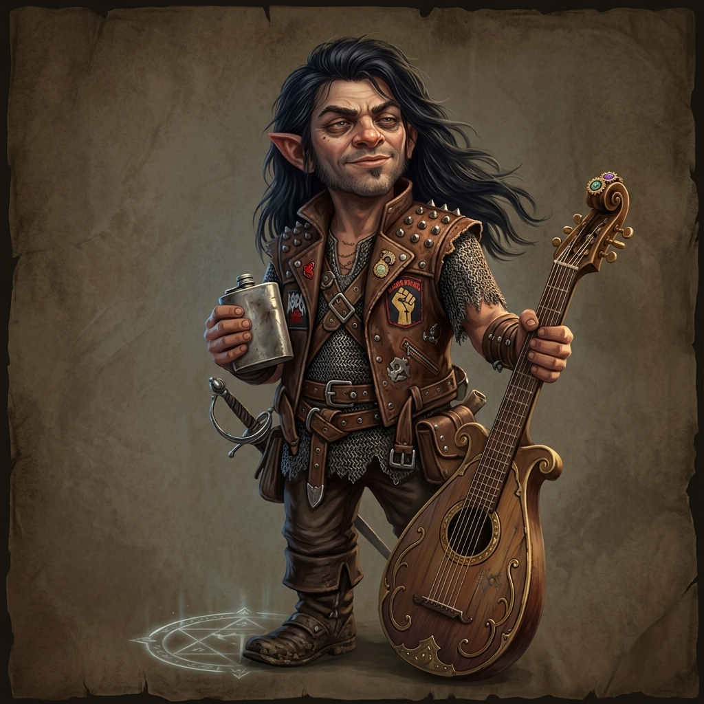
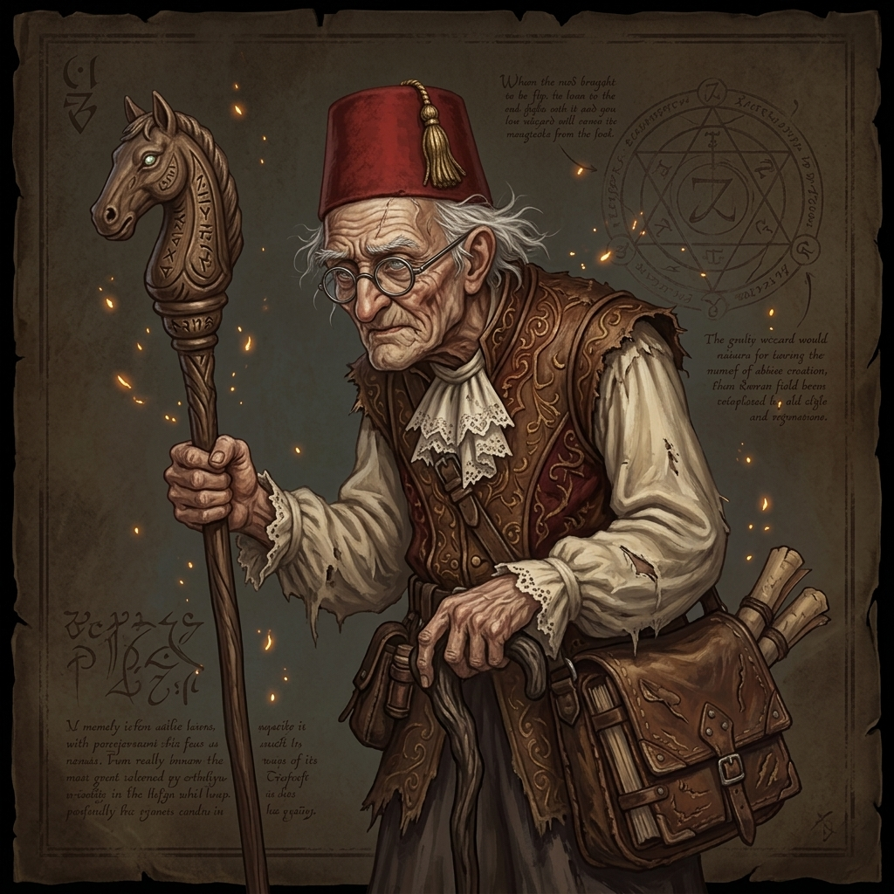
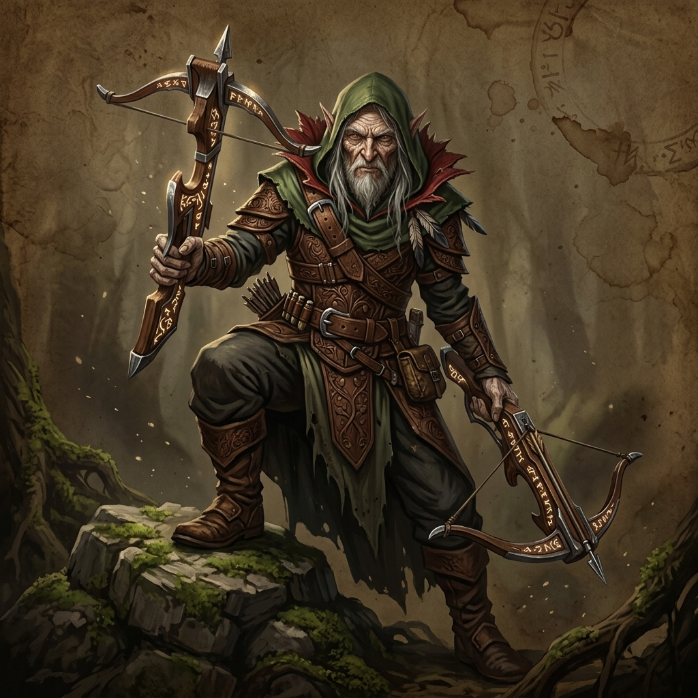
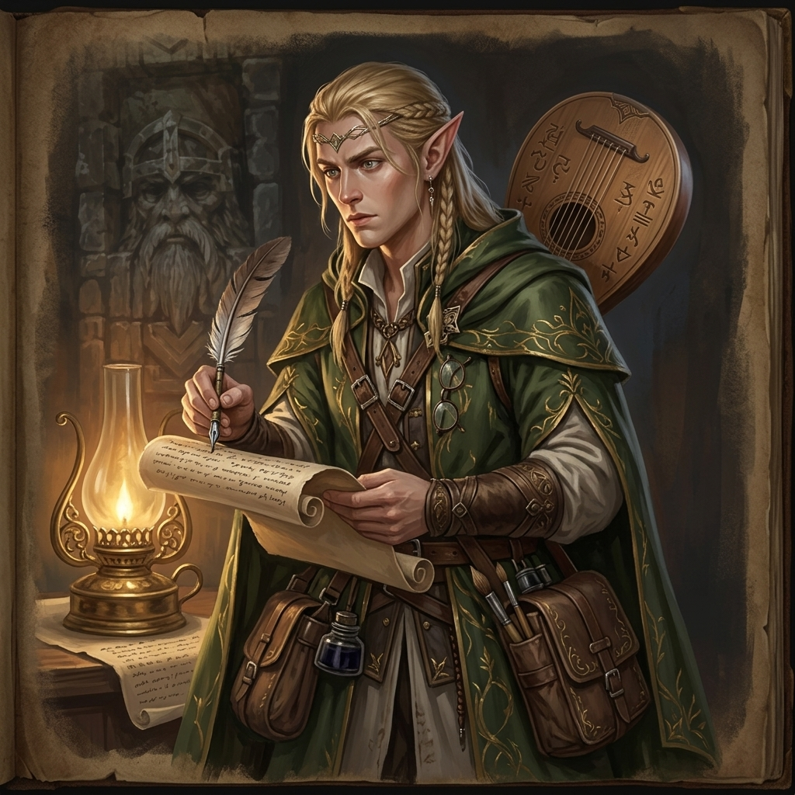
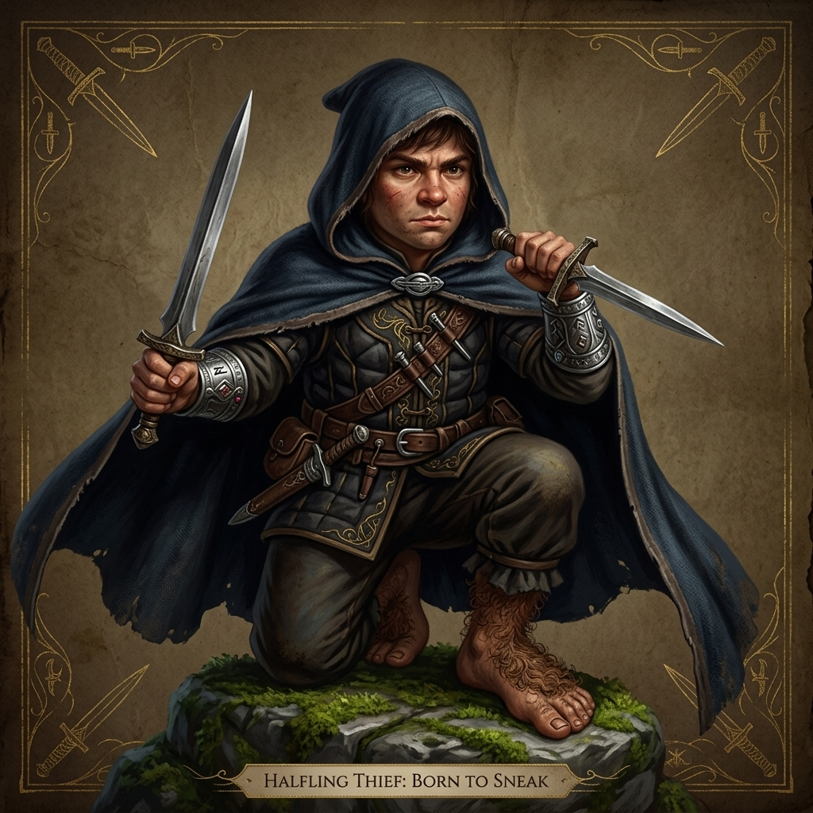

Ascheheimi Kutatás
Research in Ascheheim

Előszó: A Játékosok és Karaktereik
Mielőtt belevágnánk Ascheheim romjainak sötét és (néha indokolatlanul vicces) történetébe, álljon itt egy rövid útmutató Petykó (a kaland megalkotója) és mindenki más számára, hogy tiszta legyen: ki kivel van, és kinek a bőrébe bújt ezen a bizonyos estén.
A Játékosok és a Karaktereik:
- Jokó / Peti (azaz Én) alakítja Andror, a Szerencsés szerepét. Andror egy rock gnome bard, egykori zenész (Pepe néven), aki masszív alkoholproblémákkal küzd, és jelenleg a Sunstone College könyvtárában dolgozik biztonsági őrként. Nyers, cinikus, de a szíve a helyén van.

- Ádám alakítja Theodor Onalinus Ivarun szerepét. Theodor egy végtelenül öreg, süket és hiú human wizard, aki a törp nyelvészet megszállottja, és minden varázslatát rendhagyó módon süti el.

- Rózsa Dani alakítja Bobathan Gloomfield szerepét. Bobathan egy wood elf ranger, aki egy bizarr betegség miatt visszafelé öregszik: ráncos öregembernek néz ki, holott még gyerek. Halálosan unja a kalandot, de az édesanyja küldte, hogy "bevágódjon" Sylvain professzornál. Kettős számszeríjjal osztja az áldást a távolból.

- Kinga alakítja Coco Warborn szerepét. Coco egy elf bard (személyes névmásai: they/them). Ő az akadémiai krónikás, lore keeper, és az expedíció kinevezett szakmai vezetője. Bár van egy lantja, az igazi fegyvere a lúdtoll és a pergamen; óvatos tudós, aki mindent gondosan feljegyez.

- Kenéz alakítja Zerlo szerepét. Zerlo egy halfling (halfling) tolvaj, aki mezítláb, szőrös talpakkal oson az árnyékokban. Rablásért 8 év börtönt kapott volna, de ezt a küldetést választotta a rácsok helyett. Két tőrrel harcol, és előszeretettel bújik el a csoszogó Theodor háta mögött.

- Donát pedig a mi kiváló Játékmesterünk (DM) volt, ő hozta be a történetbe Caleth Sylvain professzort is (az NPC-t), aki felbérelt minket a Sunstone College részéről.
A történetet én, Jokó (vagyis Andror) mesélem el nektek. Szóval dőljetek hátra, bontsatok egy sört, és hallgassátok meg, hogyan nem haltunk meg egy sárkány barlangjában.
Prológus: Ahol a törpök kővé, a sör pedig meleggé válik
Nézzük, mit is kell tudni erről a bizonyos Ascheheim nevű helyről, mielőtt rátérünk arra, hogyan próbáltam meg túlélni benne.
Képzeljetek el egy gyönyörű, ősi metropoliszt, tele arannyal, drágakövekkel, meg sörhabos törpökkel. Ezt hívták Ascheheimnek, a nyolc ősi törpkirályság egyik legbüszkébbikét. Ott uralkodott Furin király, egy olyan fazon, akinek valószínűleg gránitból volt a szakálla, és aki sosem hátrált meg semmitől.
Aztán jött a mínusz 823. év – mármint a Közös Időszámítás előtt, persze.
A tankönyvekben ezt hívják a Nagy Kobold–Törp háborúnak. De az igazság az, hogy ez nem háború volt, hanem egy vörös pikkelyes, lángot okádó sárkány, bizonyos Curillax magánakciója, aki úgy döntött, hogy átrendezi a hegy ingatlanpiacát. Rárúgta a kaput a törpökre, a nyomában pedig beözönlött több ezer hisztérikus kobold.
Furin király és a népe persze harcolt, mert ők ilyenek. Makacsok, mint az öszvér. Végül sarokba szorították őket a hegy legmélyebb tárnáiban. Ekkor Furin király fogta a fejszéjét, és úgy döntött, ha már menni kell, legalább vigyék magukkal a gyíkot is. A legenda szerint a király olyan hatalmasat sózott a sárkányra, hogy az helyben kimúlt, Furin pedig megkapta a nagyon vagány "Sárkányölő" (Dragonslayer) nevet.
Tiszta hepiend, ugye? Hát nem. Öt évvel később, -818-ban a koboldok visszajöttek, és olyan dühvel rohanták le a megroggyant királyságot, hogy Furin király az elsők között harapott fűbe, vagyis... követ. Ascheheim elbukott.
És itt jön a legjobb rész, a törpök legsötétebb (és tegyük hozzá, legbizarrabb) titka, amit az akadémián csak suttogva mernek emlegetni: a törpök nem rohadnak el, mint a normális népek. Amikor meghalnak, kővé válnak. Konkrétan szoborrá dermednek, abban a pózban, ahogy kilehelték a lelküket.
Furin király és a nemesek szobrait kirakták a térre vagy betették a kriptába, mintha valami kiállításon lennének. De a pórnéppel nem bántak ilyen kesztyűs kézzel: az ő kővé dermedt testeiket szépen bezúzták, és beleépítették a falakba. Igen, jól hallottad. A törpök szó szerint a halott nagypapából és dédmamából építették a városfalat. Ez egyfelől nagyon gazdaságos, másfelől egy picit beteg.
Ja, és elvileg van varázslat, amivel vissza lehet őket változtatni kőből hússá, de a törpök szerint ez a legnagyobb szentségtörés. Ha valakit véletlenül felélesztenek, annak a bőre szürke marad, mint a pala, és kivágják a társadalomból, mint macskát szarni.
Ezek a legendák kavarogtak a fejemben (meg némi olcsó bor), amikor először hallottam a megbízásról. Ascheheim kapui több mint nyolc évszázada zárva voltak, egészen addig, amíg egy csapatnyi balfék – köztük én – úgy nem döntött, hogy jó ötlet lenne bekopogni.
De erről majd később. Tölts még egy kört!
1. Fejezet: A Sunstone College felkérése
A tudás hatalom. Legalábbis ezt hirdeti az a rohadt nagy, aranybetűs felirat a Sunstone College főbejárata felett. Személy szerint én úgy tartom, hogy a tudás nagyszerű dolog, de egy jól irányzott kocsmai balegyenes, vagy még inkább egy teli laposüveg valahogy sokkal praktikusabb a hétköznapokban.
Én Andror vagyok. Vagy ahogy a régi szép időkben ismertek: Pepe.
Ezen a ponton az ember fia – vagyis esetemben egy kilencven centis, tizennyolc kilós kőgnóm – általában egy hősi eposzba illő háttérsztorit szokott előadni bukott királyságokról, vagy tragikus szerelmekről. Nekem egyik sem jutott. Volt egy bandám, volt egy nevem, de a bulizás valahogy megcsúszott. Kicsit túltoltam az italt, a bandatagok pedig kipenderítettek. Számomra ők azóta halottak. Nincs bennem megbánás, csak egy egészséges, mélyről fakadó cinizmus a világ, és különösen a "művészek" iránt.
Így kötöttem ki a Sunstone College könyvtáránál, mint kidobó és éjjeliőr. Képzelj el egy pöttöm, kissé másnapos gnómot, amint egy pókerező minotauruszhoz illő komolysággal próbálja kordában tartani a túlbuzgó, köpenyes diákokat. Nem én vagyok a legfélelmetesebb látvány, ezt aláírom, de megvan a magam... lelkesedése. Meg persze egy félig teli üveg tüzes vizem a zubbonyom belső zsebében.
Azon a bizonyos kedd reggelen is épp ezen az üvegen elmélkedtem, a falnak támaszkodva, amikor megérkezett Caleth Sylvain professzor.
A professzor egy tünde volt, abból a fajtából, aki annyira elegáns és fennhordja az orrát, hogy ha esik az eső, belefullad. Ő volt az intézmény egyik vezető kutatója, és olyan arccal lépett oda hozzám, mintha épp most fedezett volna fel egy különösen ritka bogarat.
– Andror – szólított meg, azzal a tipikus, akadémiai kimértséggel. – Tudomásomra jutott, hogy ön... rendelkezik bizonyos tereptapasztalattal. És hogy a bérigénye meglehetősen... rugalmas.
– Ha a "rugalmas" azt jelenti, hogy olcsó vagyok, mert tartozom a sarki kocsmárosnak, akkor fején találta a szöget, professzor úr – húztam vigyorra a számat. – Mit kell őrizni? Valami ritka grimoire-t? Egy újabb vitrines kiállítást?
– Egy expedíciót szervezek – vágta rá, miközben a hangját lehalkította, mintha titkot osztana meg. – Ascheheim ősi romjaihoz. Szükségünk van kísérőkre. És magát elnézve, Andror... ön hetek óta csak teng-leng ebben a könyvtárban. Teljesen élettelenül és céltalanul. Ideje lenne kezdenie magával valamit, nem gondolja?
Ascheheim. A kő és a tűz birodalma. Az a hely, ahonnan a törpök úgy jöttek ki, mint a megvert kutyák, és azóta is csak suttogva beszélnek róla. Normális esetben azt mondtam volna neki, hogy dugja fel az expedícióját a legmagasabb tornyába, de a kocsmáros tényleg kezdett türelmetlen lenni az adósságom miatt.
– Benne vagyok. De dupla zsold, és fizeti az úti italomat – böktem ki.
Sylvain bólintott. – A csapat többi tagja már bent várja.
A könyvtár előcsarnokába lépve úgy éreztem magam, mintha egy nagyon rossz vicc kezdősoraiba csöppentem volna. Bement a kocsmába – akarom mondani a könyvtárba – egy gnóm, egy tünde, meg...
Meg valaki, aki úgy nézett ki, mint egy múzeumból megszökött kiállítási tárgy.
Egy végtelenül öreg ember állt a terem közepén. Ősz haj, bozontos, gondosan pödört bajusz, a fején egy nevetséges fez kalap, a kezében pedig egy lófejes faragott bot. Úgy csoszogott fel-alá, mintha minden lépésnél attól félne, hogy szétesik.
– Theodor Onalinus Ivarun vagyok! – kiáltotta el magát a kelleténél jóval hangosabban, amikor meglátott. Olyan hangerővel beszélt, mintha nem egy gnóm állna előtte, hanem egy seregnyire lévő hegycsúcsnak kiabálna. – Törp szakos nyelvész! Ez az expedíció tökéletes lesz a disszertációmhoz! Be fogom bizonyítani a történelemnek, amit még senki nem mert kimondani!
– Micsodát? – pislogtam.
– A TÖRPÖK NEM VOLTAK NUDISTÁK! – ordította vissza az öreg. – Jó a bajszom, nem?
Aztán körülnéztem a többieken. A sarokban egy fiatal, meglehetősen idegesnek tűnő tünde, Coco lapozgatta a jegyzeteit, mintha a papírlapok között rejlene a túlélés titka. Bár volt nála egy lant, nyilvánvalóan ritkán használta; az ő igazi fegyvere a lúdtoll és a pergamen volt. Látszott rajta, hogy életében nem volt még sötétebb helyen a nagymamája spájzánál.
Tőle nem messze egy magasabb, szikár fickó állt. Bobathan. Ő volt az egyetlen a szobában, aki úgy nézett ki, mint aki már látott vért anélkül, hogy elájult volna. Egy pár számszeríjat tisztogatott csendes profizmussal. Vele talán szót fogok érteni.
És volt még egy alak. Vagyis inkább csak egy árnyék a könyvespolcok között. Zerlo. Egy csendes rogue, aki folyton a tőreivel játszadozott, és úgy próbált beolvadni a háttérbe, hogy az már szinte feltűnő volt.
– Ez a csapat? – fordultam Sylvainhoz, és a hüvelykujjammal a csoszogó, ordibáló Theodor felé bökve. – Mert ha Ascheheimben a sárkány helyett süket koboldok élnek, akiket halálra kell untatni nyelvészeti vitákkal, akkor nyert ügyünk van.
– Ők a legjobbak, akiket... rövid határidővel találtam – válaszolta az elf, enyhe feszültséggel a hangjában.
Felsóhajtottam. Előhúztam a laposüvegemet, és húztam belőle egy jókora kortyot. A karcos alkohol végigégette a torkomat, és egy pillanatra elnyomta Theodor hangos magyarázatát a törpök ragozási szabályairól.
– Rendben, Sylvain professzor. Akkor irány a sötétség. De ha meg kell halnunk, legalább próbáljunk meg közben nem túl feltűnőek lenni.
Theodor ekkor megbotlott a saját botjában, és hangos szitkozódások közepette majdnem feldöntött egy egész könyvespolcot.
Igen. Ez a küldetés vagy nagyon rövid lesz, vagy borzasztóan hosszú. Vagy a történelemkönyvekbe írjuk be magunkat, vagy – ami a társaságot elnézve sokkal valószínűbb – valami nyirkos barlang mélyén végezzük, egy elfeledett, kővé vált törp királyság romjai között.
2. Fejezet: Zsebmókus és a hazug szobor
A hegyig tartó út legalább annyira volt fárasztó, mint amennyire abszurd.
Ascheheim nem a szomszédban volt, és miután lovakkal megközelíthetetlennek bizonyult a terep, gyalog kellett nekivágnunk. Nyolcszáz évnyi vadvadon nőtte be a régi törp utakat. Sűrű erdőkön, omladozó sziklafalakon és tüskés bozótosokon verekedtük át magunkat.
Menet közben volt időm jobban megfigyelni ezt a szedett-vedett társaságot. Zerlo, a halfling rogue mezítláb, szőrös talpakkal lépkedett az élen. Úgy tudom, a börtönt kerülte el ezzel az öngyilkos küldetéssel. Ő legalább csendben volt. Nem úgy, mint Coco, a tünde bard – bocsánat, "tudományos krónikás" és az expedíció kinevezett vezetője –, aki minden lépésnél gondosan jegyzetelt. Bobathan, a wood elf ranger (aki valamilyen bizarr átok folytán visszafelé öregszik, és úgy néz ki, mint egy vénember, holott még gyerek) halálosan unatkozott, és kavicsokat rugdosott maga előtt. Állítólag az anyja küldte, hogy jó pontokat szerezzen Sylvain professzornál. És persze ott volt az öreg Theodor, aki a csoszogásával minden környékbeli medvét elriasztott (vagy magához vonzott).
Délután egy-két óra körül járhatott, mire elértük a célunkat. Egy névtelen hegycsúcs lábánál álltunk. A völgyre egy oda nem illő, nappali telihold vetett halvány fényt.
Az út végét egy feneketlen, tintafekete szakadék vágta el. A túloldalon felsejlett a város igazi bejárata. A bejáratot két, marha nagy kőből faragott törp szobor fogta közre, és mindkét szobor előtt egy-egy kéken derengő portál lüktetett.
– Klasszikus törp építészet – mormolta Sylvain professzor. – Az egyik portál a halálba vezet, a másik Ascheheim hídjára. Az egyik szobor mindig igazat mond, a másik mindig hazudik.
Kiváló. Logikai feladvány.
Én csak a laposüvegemet vettem elő, és éberen figyeltem az erdőt a hátunk mögött, miközben Bobathan unottan arrébb rúgott egy tobozt.
– Az biztos, hogy az egyik nem jó – szólalt meg mély bölcsességgel Theodor, a fez kalapját megigazítva.
– Milyen meglátás, professzor úr – mormolta Coco a jegyzetei mögül.
Zerlo a tettek mezejére lépett: a halfling felszaladt a jobb oldali gigantikus szoborra, egészen a bokájáig (ami így is magasabban volt, mint mi).
– Óvatosan, le ne ess! – aggodalmaskodott lentről Theodor.
– Nem biztos, hogy ott fent van a megoldás! – kiáltott fel Coco.
Zerlo szétnézett. Bár furcsa módon nappali telihold volt, az erdőn, a hegyeken és a felhőkön kívül semmi hasznosat nem látott.
– Ha már itt tartunk, a mi jobb oldalunk, vagy a szobrok jobb oldala? – kiabálta le a halfling a boka magasságából. Majd jött a következő remek ötlete: – Mi lenne, ha rákötnénk valakinek a derekára egy kötelet, beküldenénk az egyik portálon, és ha baj van, egyszerűen visszahúzzuk?
Senki nem jelentkezett önkéntesnek.
– Akkor fogjunk egy mókust, és dobjuk a szobornak! – próbálkozott újra Zerlo.
– Egy mókust? Itt? – kérdeztem vissza. Coco azonnal Theodorhoz fordult.
– Magának nincs valami varázslata, amivel megidézhetne egy állatot? Egy... bensőséges társat?
Theodor felnézett, és a szokásos orkán erejű hangján válaszolt:
– ELFELEJTETTEM ELŐKÉSZÍTENI A VARÁZSLATOT! CSAK PITÉM VAN!
Egy pillanatra csend lett. Majd Theodor arca felderült.
– De nincs is rá szükség! A pedagógusi lényem azt mondja, hogy a törpök általában jobb kezesek! Akkor miért raknák a bejáratot a bal oldalra?
– Ez áltudomány, Ivarun! – hördült fel azonnal Sylvain professzor, és a két tiszteletreméltó tudós perceken át tartó vitába kezdett a törpök anatómiájáról.
Mielőtt egymásnak estek volna, Coco a sarkára állt. Odasétált a jobb oldali szoborhoz.
– Ez a jó bejárat? – kérdezte.
A szobor megelevenedett, és kőmorzsoló hangon rávágta: – Igen.
Theodor nem akart lemaradni, odacsoszogott a bal oldalihoz. – És ez a jó bejárat?
– Igen – válaszolta a másik szobor is.
Remek. Tehát az egyik hazudott. De melyik?
Theodor agytekervényei ekkor indultak be igazán. Rápillantott a saját aszott, remegő kezére, majd a bal oldali szoborra nézett. Magára bökött az ujjával.
– Ez itt egy öreg ember?
A kőszobor szemeiben fény villant:
– Nem.
Theodor diadalmasan csapott a térdére.
– Hah! Hazudik! Mivel nyilvánvalóan egy öregember vagyok, ez a szobor a hazug! Vagyis a jobb oldali mond igazat! A jobb portál a helyes bejárat!
Még Sylvain is kénytelen volt elismerően bólintani. A logikai feladványt megoldottuk. Felmerült azonban a kérdés: ki mer először bemenni?
A csendet én törtem meg. Tekertem egyet a laposüvegem kupakján, eltettem, majd megvontam a vállam, és elindultam a jobb oldali, kéken derengő portál felé.
– Mit érzel? – kiáltott utánam aggódva Coco, ahogy a fény körbeölelt.
– Forog velem a világ... – suttogtam, és abban a pillanatban tehetetlenül, arccal előre bezuhantam a portál túloldalára. A kemény kőpadló azonnal helyre tette az egyensúlyérzékemet.
Amint eltűntem a szemük elől, Bobathan megindult utánam, hogy ő is átlépjen a jobb oldali portálon. A kőkapu azonban nem kért a tünde kószából: egy fülsiketítő reccsenés kíséretében egy kék villám csapott le, egyenesen Bobathan mellkasába. A fiú egy meglepett horkantással hőkölt hátra, miközben füstölt a páncélja.
Kisebb pánik tört ki. Zerlo, a rogue azonnal a jobb oldali szoborhoz fordult.
– Ez a jó bejárat? – kérdezte tőle.
– Nem – dörrente a kőarc.
Sylvain professzor szeme felcsillant.
– Zseniális! – kiáltott fel. – Ez egy biztonsági mechanizmus! A kapu egyszerre csak egyesével enged be embereket, hogy lelassítsa az esetleges támadó seregeket. Minden átkelés után a portálok megcserélődnek!
Ezzel a lendülettel a professzor fogta magát, és besétált a bal oldali portálba, ami minden gond nélkül átengedte.
Ezután már rutinfeladat volt az egész. Zerlo, Bobathan, majd Coco egyesével megkérdezték a jobb oldali (igazmondó) szobrot, hogy épp melyik a jó kapu, és a válasz alapján biztonságban átkeltek hozzánk a túloldalra.
Amikor már csak az öreg Theodor maradt hátra, ő még megállt egy pillanatra a jobb oldali szobor előtt. Kihúzta magát, amennyire a csontjai engedték, és megpödörte a bajszát.
– Szerinted a koromhoz képest jól nézek ki?
A szobor lassan megmozdult:
– Szerintem az emberek csúfak. – Aztán kis szünet. – De a bajszod szép.
Amikor az öreg wizard megérkezett mellénk a túloldalra, széles vigyor ült az arcán.
– Mitől vagy ilyen vidám? – kérdeztem, miközben poroltam a nadrágomat, és megkínáltam a laposüvegemmel.
– Nem tudom... – felelte Theodor rejtélyesen, a felkínált italt visszautasítva, de a bajszát olyan büszkén pödörte, mint aki épp megnyerte a lottót.
Sóhajtottam, és elraktam az üveget.
– Na, végre indulhatunk.
És ezzel belevetettük magunkat a sötétségbe.
3. Fejezet: A sötétség hídja és a nudista törpök
A portálok túloldala nem az a fajta hely volt, ahová az ember önként befizet egy vakációra.
Miután a halálos villámcsapásokat kikerülve, a kapu váltakozó mechanizmusát kijátszva mindannyian átverekedtük magunkat, egy hatalmas előcsarnokban találtuk magunkat. Tőlünk tizenöt méterre a szilárd talaj véget ért, és egy rogyadozó kőhíd ívelt át egy sötét, feneketlennek tűnő szakadék felett. Ötven méterenként pislákoló fáklyák adtak némi fényt.
– Haladjunk – mondtam, majd odasétáltam a legközelebbi fáklyához a falon. Kinyújtottam a kezem. Aztán lábujjhegyre álltam. Aztán ugrottam egyet. Semmi.
Bobathan, aki a villámcsapás óta még unottabb volt, sóhajtott egyet, kinyújtotta a hosszú tünde karját, levette a fáklyát, és a kezembe nyomta.
– Kösz – morogtam. Aztán vetettem rá egy pillantást, rájöttem, hogy csak foglalná a kezem, így egyszerűen a földre dobtam, és inkább egy Táncoló Fények varázslatot mondtam el magamra. Négy izzó fénygömb kezdett keringeni körülöttem.
Zerlo, a rogue, eközben a tettek mezejére lépett. Egy sor fém mászószeget vert a sziklafalba, és ügyesen kifeszített egy vezetőkötelet a híd pereme mentén.
Coco remegő kézzel markolta meg a kötelet.
– Óvatosan! Ez a híd évszázadok óta nem volt terhelve. Instabil lehet.
Bobathan vállat vont, és magabiztos, csendes léptekkel elindult előre a sötétségbe. Szinte azonnal elnyelte a vaksötét.
– Bob, minden rendben? – kiáltott utána Coco aggódva.
– Igen, stabil – szólt vissza a ranger hangja a semmiből.
– Nem akarod megfogni a kötelet? – kérdezte a krónikás reménykedve.
– Milyen kötelet? – jött a válasz a sötétből. – Itt nincs kötél.
Bobathan láthatóan egyszerűen elsétált a kifeszített biztonsági kötél mellett. Végül is, ki vagyok én, hogy elítéljem? Kortyoltam egyet a laposüvegből, majd a lebegő fényeimmel elindultam előre, míg a sor legvégén Theodor a lófejes botjával világított, mint egy eltévedt világítótorony.
A százlábú híd egy kőteraszban végződött. Kiderült, hogy a "szakadék" nem feneketlen, csupán egy hihetetlenül meredek alagút, ami Ascheheim még mélyebb bugyraiba vezet.
A teraszon egy ősrégi, szétrohadt fadoboz hevert. Coco rögtön rávetette magát, mintha legalábbis a bölcsek kövét találta volna meg. A ládából molyrágta, rongyos ruhadarabokat húzott elő.
Theodor közelebb hajolt a botja fényével, és teátrálisan a magasba emelte az ujját.
– A törpök nem voltak nudisták! – jelentette ki zengő hangon, mintha egy egyetemi katedrán állna. – Feljegyezve! Ezt beleveszem a disszertációmba!
Míg az öreg a tudomány oltárán áldozott, én a falakat figyeltem. Az egyik primitív fáklyatartó mellett kezdetleges, vörös festékkel mázolt graffitik éktelenkedtek. Csúnya, elnagyolt törp fejeket ábrázoltak, amiket valakik... vagy valamik egyértelműen gúnyból rajzoltak oda.
– Ezek nem törp keze munkái – állapította meg Theodor, miközben elővett egy bőrdarabot a zsebéből (ami kísértetiesen hasonlított egy cipőbetétre), elmorzsolta, és egy Mágikus Páncélt vont maga köré. – Primitív vademberek. Vagy koboldok.
– Nem akarok balhét – jegyeztem meg, és diszkréten a tőreim felé csúsztattam a kezem.
Coco a falhoz lépett, és az ujjával követte a vérvörös draconic rúnákat a rajzok mellett.
– Két szót ismerek fel... – suttogta. – Az egyik a "törp". A másik a "halál".
– Jó népek, vigyázzunk, csak ennyi! – harsogta Theodor, amitől még a denevérek is szívrohamot kaptak a plafonon.
– Csendesebben! – sziszegett Sylvain professzor. – És oltsák el azokat a fényeket! Messzire világítanak.
Sóhajtottam, és eloszlattam a varázslatomat. Theodor lófejes botja azért persze tovább világított, mert ha a tudománynak fénye van, azt az öreg nem rejti véka alá.
4. Fejezet: A részeges karatemester és a Buziliszkusz
A "lopakodás" egy igen relatív fogalom. Zerlo, a halfling rogue mesterfokon űzte. Én... nos, én is megtettem a magamét.
Ahogy Zerlo előreosont a sötét, lejtős alagútban, közvetlenül a nyomába szegődtem. Mivel a feszültség már szinte tapintható volt a levegőben, úgy gondoltam, a lantommal javítok a hangulaton. Elkezdtem nagyon halkan egy vészjósló, "suspense" dallamot pengetni.
Hirtelen Zerlo megtorpant a sötétben, én meg tiszta erőből beleszaladtam a hátába. A laposüveg tartalma már dolgozott bennem, így mindent egy kicsit duplán láttam, ami jelentősen megnehezítette a távolságbecslést.
Tettünk még pár lépést. Zerlo megint megállt, én pedig újra telibe kaptam a hátát.
– Eltöröd a lantom! – sziszegtem.
Zerlo hátrafordult, és a legnagyobb nyugalommal, de határozottan megkért:
– Kérlek, menj vissza a többiekhez. Hagyj egyedül.
Pislogtam kettőt a sötétben.
– Miért? Könnyítened kell magadon? Pisilned kell?
– Nem – suttogta vissza Zerlo. – Tudom, hogy csak azért jöttél előre, hogy halljam, de menj vissza a többiekhez. Így ők most nem hallják a zenédet.
– Jó, igazad van! – bólintottam megértően.
Azzal megfordultam, és engedelmesen visszahúzódtam a csoporthoz. Ahogy közeledtem hozzájuk, a többiek bizonyára nagyon örültek, hogy a kísérteties lantzene ismét felcsendült mellettük a sötétségben.
Néhány méterrel lejjebb Zerlo felemelte a kezét. A földön, a sötétséget megtörve egy kéken derengő, jéghideg fényt árasztó varázskör lüktetett.
A kör közepén rúnák örvénylettek. A levegő azonnal lehűlt, ahogy közelebb léptünk, a lélegzetünk fehér páraként jelent meg a sötétben.
Theodor hunyorogva rámeredt a körre, majd halkan hümmögött.
– Igen, igen. Ez valami árkánumhoz tartozik, biztos.
– "Homesis haragja" – fordította Coco a feliratot, óvatosan távolságot tartva.
– Ez egy mágikus csapda – jelentette ki Theodor büszkén. – Egy jó varázslattal, mondjuk egy Mágia Szétoszlatásával hatástalanítani lehetne.
– És van ilyened? – kérdezte Sylvain professzor a háttérből.
– Nincs! – vágta rá az öreg. – De tudjátok, mit? Aktiváljuk úgy, hogy rádobunk egy követ!
Mielőtt bárki tiltakozhatott volna, Zerlo felkapott egy öklömnyi követ, és a kör közepébe hajította. A kő koppant. Pattant egyet. És kigurult a túloldalon. Semmi sem történt. A csapda láthatóan nem kövekre volt kalibrálva.
– Menjünk tovább akkor, és hagyjuk ezt a csapdát a fenébe? – vetettem fel a legegyszerűbb, kocsmai megoldást. De Bobathan már unta a várakozást. Csendben elmormolt magára egy Ugrás varázslatot, elrugaszkodott, és mint egy balett-táncos, átszállt a kör felett.
Theodor egy megvető horkantással felemelte a botját.
– Ugrás! – kiáltotta, majd egy Ködös lépés varázslattal egyszerűen átteleportált a túloldalra.
Én maradtam. Meg Coco.
Megigazítottam a lantom szíját, ittam még egy kortyot, majd megvontam a vállam. Ami nem reagált egy kőre, az egy kőgnómra sem fog, igaz?
Belelptem a körbe.
Abban a pillanatban a rúnák felizzottak, és egy vakító kék villám csapott le közvetlenül mögém. Ha józan vagyok, valószínűleg ijedtemben beugrom a közepébe, és megsülök. De mivel a lábaim már a saját, alkoholgőzös koreográfiájukat járták, pont a robbanás pillanatában tántorodtam meg balra. A villám elsütött a fülem mellett. Egy újabb villám követte, de pont akkor botlottam meg egy képzeletbeli kavicsban. Sikerült úgy végigdülöngélnem a halálos varázskörön, mint egy részeges karatemesternek, anélkül, hogy egyetlen karcolást is szereztem volna.
Coco ezen láthatóan felbátorodott.
– Ha neki sikerült, nekem is fog! – jelentette ki elszántan, majd elindult.
Az első villám elől még gyönyörűen kitérőt tett, de a második telibe kapta. A robbanás ereje átrepítette a levegőben, egyenesen a mi oldalunkra, ahol kormosan és nyöszörögve ért földet.
– Na, látod, sikerült! – vigyorogtam rá, miközben felsegítettem. – Mit fostatok ennyire?
Miközben Sylvain professzor is átteleportált, Zerlo pedig Pókembert megszégyenítő módon átmászott a falon, odaléptem az elgyötört Cocohoz. Csettintettem egyet az ujjammal, és a Bűvészmutatvány varázslatommal letisztítottam a kormot a ruhájáról, majd egy Javítással eltüntettem a szakadásokat az anyagból.
Rávillantottam a legszebb, félig részeg, hősies mosolyomat, és kacsintottam egyet.
Coco arca eltorzult a felháborodástól. Sértődötten felpattant, elhúzódott tőlem, és motyogott egy Gyógyító szót a saját sebeire.
Megrántottam a vállam. Biztos vele van a baj.
Az alagút egy hatalmas, egykori piactérre nyílt. Ha Ascheheim eddig lenyűgöző volt, itt már egyenesen monumentális. Precízen faragott oszlopok és évszázadok óta elhagyatott bódék sorakoztak a sötétben. A földet rozsdás fegyverek, átrágott páncélok és letört kövek borították. És csontvázak. Több tucatnyi, apró, szarvas kobold csontváza.
A bódék között haladva a falfirkák is egyértelműbbek lettek: lándzsás koboldokat ábrázoltak, akik szakállas embereket taposnak el. Egyértelmű volt, hogy ez a hely a dicsőséges Ascheheim bukásának utolsó helyszíne.
Amikor kiértünk a piac kör alakú főterére, a látványtól még én is kijózanodtam egy pillanatra.
A kobold csontok tengere közepén tucatnyi kővé dermedt törp szobor állt. Mindegyik a harc és a halál egy-egy kimerevített, drámai pillanatában dermedt meg. Borzalmas látvány volt. A legtöbb szobrot megcsonkították – fejek, karok, lábak hiányoztak.
Kivételt csak egyetlen szobor képezett. Középen, magasba emelt csatabárddal, koronával a fején egy hatalmas törp állt, sértetlenül.
– Furin Dragonslayer király – suttogta Sylvain professzor, és a hangjában őszinte tisztelet zengett. – A koboldok annyira rettegtek tőle, hogy még holtában, kővé dermedve sem mertek a közelébe menni.
Theodor előrehajolt.
– Érdekes, nagyon érdekes. Professzor úr, puszta kíváncsiságból kérdezem... hogyan lehet ezeket a halottakat feléleszteni a kő-létből?
Sylvain megigazította a talárját.
– Roppant nehéz feladat. Valamilyen magasabb rendű helyreállító mágia kell hozzá. Tulajdonképpen pontosan ugyanaz a mágia képes feloldani ezt a kővé válást, mint ami a baziliszkusz átkát is gyógyítja.
Pislogtam kettőt. Az agyamban a "törpök", "kő" és "varázslat" szavak megpróbáltak értelmes sorrendbe állni.
– Várjunk – emeltem fel a kezem, és bizonytalanul a professzorra néztem. – Azt mondta... Buziliszkusz?
És én még azt hittem, hogy a mai nap nem lehet ennél szürreálisabb.
5. Fejezet: Temu-s sárkány és krémes pite
Bár Furin Dragonslayer király szobra valóban lenyűgöző volt, engem sokkal jobban érdekelt a körülöttünk heverő törmelék – és az a furcsa zaj, amit a sötétségből hallottam. Vagy legalábbis hallani véltem. Az alkohol már olyan szinten elhomályosította a látásomat, hogy nem tudtam megmondani, mozgó fáklyákat látok-e, vagy csak a vérkeringésem dobol a szemgolyómban.
Coco szerencsére megerősítette a gyanúmat.
– Valakik jönnek! – suttogta élesen.
Persze a "lopakodás" kifejezés a korosodó Theodor szótárából teljesen hiányzott.
– Mik azok a fények?! – harsogta az öreg, aki valószínűleg a saját hangját is csak tompán hallotta.
Sylvain professzor arcáról azonnal leolvadt a tudományos lelkesedés, és helyét átvette a színtiszta pánik.
– Mit csináljunk?! – rebegte, miközben fel-alá kapkodta a fejét.
– Bújjunk el a bódékban! – vágta rá Zerlo.
Azzal mindenki bevetődött a legközelebbi rohadó piaci pult alá. Nekem a részegségtől ez inkább egy hangos, csörömpölős bukfenc formájában sikerült, de valahogy mégis sikerült behúznom a lábam, mire a fényforrások beértek a térre.
Nyolc, állig felfegyverzett kobold menetelt be a főtérre. Lándzsákat és fáklyákat szorongattak, és egy olyan torokhangú nyelven vartyogtak egymással, amiből egyetlen szót sem értettünk. Bár átfésülték a bódék közötti sorokat, az őrjárat inkább rutinból történt; egyikük sem nézett be elég mélyre ahhoz, hogy észrevegye a sötétben lapító társaságunkat. Végül áthaladtak a téren, és elnyelte őket a túlsó alagút sötétje.
Lassan, óvatosan előmásztunk. Próbáltam megfogalmazni egy remek taktikai észrevételt, de mire kinyitottam a szám, egyszerűen elfelejtettem, mit akartam mondani, így csak csuklottam egyet.
– Ez egy kobold őrjárat volt! – jelentette ki Sylvain professzor azt, ami mindannyiunknak egyértelmű volt.
És ekkor az eddig törékeny, lassan csoszogó öreg Theodor szemeiben felizzott valami indokolatlan vérszomj.
– Miért nem öljük meg őket? – sziszegte. – Agyonbasszuk!
Bobathan elképedve meredt az öregre.
– Theodor bácsi, maga nagyon erős lett!
Mielőtt bárki lecsillapíthatta volna a felhergelt wizardt, újabb léptek zaja hallatszott. Egy magányos kobold rohant át a téren, kétségbeesetten igyekezve utolérni a többieket.
Zerlo nem is gondolkodott. Ahogy a kobold elhaladt a bódénk előtt, a halfling egyetlen, folyékony mozdulattal előrántotta az egyik tőrét, és elhajította. A penge fojtott puffanással fúródott a lény koponyájába. A kobold azonnal, rongybabaként roskad össze... de nem némán. A haláltusájában egy velőtrázó, éles sikoly szakadt fel a torkából.
A csend egy másodpercig tartott. Aztán a sötétségből egyszerre nyolc torokból harsant fel a válasz. A fegyverek csörömpölése és a rohanó léptek zaja úgy visszhangzott a kőfalak között, mintha egy egész hadsereg tartana felénk.
– Futás! – üvöltötte a professzor.
Egyetlen tiszta menekülőút maradt: egy masszív kőajtó az egyik belső terem felé. Bevetődtünk rajta, de a kőajtó rozsdás zsanérjai kegyetlenül megmakacsolták magukat. Beragadt.
Mielőtt bármit is tehettünk volna, az első öt kobold berontott az ajtónyíláson. Felemelték a fegyvereiket, és...
BUMM!
A terem mennyezetéről, egyenesen a kőajtó pereméről egy hatalmas, pikkelyes tömeg zuhant alá. Egy vörös sárkány vetődött rá az egyik koboldra, aki a csapástól szabályosan pürésedett a kőpadlón.
A fenevad hatalmasat szippantott a levegőből, majd dühösen a megmaradt koboldokra ordított.
– Takarodjatok! – dörrente egy mély, mindent átható hangon. – Hogyha nem tudtátok visszatartani őket eddig, akkor most ne legyetek láb alatt!
A kör alakú terem hirtelen pokolian szűknek tűnt. Köztünk és a kijárat között egy dühös vörös sárkány tornyosult.
Bobathan cselekedett először. A dupla számszeríjának húrjai fémes csattanással pendültek meg. Az első nyílvessző az egyik kobold torkába, a második a másik kobold szívébe fúródott. Mindkettő holtan rogyott a padlóra.
A sárkány feléjük kapta a fejét, amit azonnal ki is használtam.
A rettegéstől fűtve hátráltam, miközben ujjaimmal egy csipetnyi finom gyapjút morzsolgattam.
– Phantasmal Force!
A varázslatom egyenesen a sárkány elméjébe fúródott. A fenevad szemei előtt a semmiből megelevenedik Furin Dragonslayer törp király szellemszerű alakja, és egy monumentális csapást mért a sárkány fejére. A sárkány dühösen felhorkant a fantom-ütéstől (ami 7 pszichés sebzést okozott neki), de sajnos rá kellett jönnöm, hogy ő már nem az a sárkány, aki nyolcszáz éve rettegett a királytól. A látomás inkább csak felidegesítette.
Ezalatt Zerlo lendületből előresuhant, és egy újabb tőrdobással leterítette a harmadik koboldot, majd a másodlagos fegyverét a negyedik (és egyben utolsó) vállába vágta, súlyosan megsebezve azt.
Theodor sem akart lemaradni. Sötét aurát idézve a kezébe, a szörnyetegre meredt.
– Fuck you! – üvöltötte az öreg, megpróbálva rákényszeríteni a Félelemkeltés (Cause Fear) igézetét a bestiára. A vörös sárkány azonban puszta akaraterőből lerázta magáról a mágiát, és megvetően felhorkant. Theodor erre hősiesen iszkolni kezdett a terem túlsó vége felé.
Coco egy pillanattal később egy dühöngő gömbvillámot, egy Szétzúzás (Shatter) varázslatot idézett a lény köré, amitől a pikkelyei között szikrák pattogtak, majd a krónikás gyorsan beugrott Bobathan háta mögé.
A megmaradt kis kobold, utolsó erejével, a vállából kiálló tőrrel a kezében rárontott Zerlóra, és sikeresen megdöfte őt (5 sebzés).
A sárkány megelégelte a rovarcsípéseket. Hatalmas szárnyaival a magasba emelkedett, egy gyors kört leírt, és egyenesen a hátráló Theodor, Bobathan és Coco elé szállt le. Kitátotta a száját, és mindent elsöprő tűzleheletet fújt rájuk.
Bár mindhárman időben elugrottak, a perzselő lángok így is súlyosan megégették őket, fejenként 15 sebzést elszenvedve. Theodor haja füstölt, a ruhája széle lángolt – az öreg szó szerint az élete utolsó cérnaszálán, kemény 2 Életerő ponton lógott.
Coco gyorsan reagált a következő körben, és egy Segély (Aid) varázslattal visszahozta az öreget a halál torkából (7 Életerőre).
És ekkor jött a csata legszürreálisabb pillanata.
Theodor, miközben a hatalmas sárkány közvetlenül mellette tornyosult, végső kétségbeesésében belenyúlt a táskájába. Előhúzott egy óriási bagolytollat. Meg egy papírzacskót. A zacskóból kivett egy krémes pitét. Megrázta a tollat a bestia felé, majd a pitét... egyenesen a saját arcába vágta.
Tasha nevetséges kacagása (Tasha's Hideous Laughter).
A vörös sárkány pislogott egyet. Aztán horkantott. Végül a fenevad tehetetlenül a földre vágta magát, és hisztérikus, kontrollálhatatlan röhögésben tört ki.
– Ha ütitek, akkor abbahagyja a röhögést! – kiáltotta a krémes arcú Theodor, és sprintelni kezdett a kőajtó felé.
Zerlo ezalatt kihasználta az alkalmat: 20 lábról megdobta a sárkányt egy tőrrel, de a lövedék csúfosan mellé szállt, lekopogva a kőpadlón. Gyorsan be is húzódott Theodor mögé elrejtőzni.
Bobathan végre kilőtte a Zerlót zaklató utolsó koboldot, és ráfogta a számszeríjait a röhögő sárkányra.
Coco ismét előrelépett, és rászabadított még egy Szétzúzás (Shatter) varázslatot a dög rekeszizmára. A villámló robbanás (13 sebzés) megperzselte a sárkányt, aki azonban annyira viccesnek találta Theodor tortás mutatványát, hogy még a sebzéstől is képtelen volt abbahagyni a röhögést.
Csak Bobathan két nyílvesszője hozta meg a fordulatot: a sárkány fenekébe fúródó nyílvesszőktől a fenevad végre kijózanodott, és vicsorogva abbahagyta a nevetést.
De mielőtt a sárkány felkelhetett volna, Theodor, aki már az ajtóban állt, egy marék ragacsos hálót vágott alá (Pókháló / Web varázslat), ami teljesen foglyul ejtette. Zerlo újra próbálkozott egy tőrdobással, de olyan ügyetlenül célzott, hogy a fegyver egyszerűen beleragadt a sűrű pókhálóba. A rogue ezen annyira felbosszantotta magát, hogy inkább elkezdte fürkészni a termet, hátha lát valami kincset.
Itt volt az én időm. Vettem egy mély levegőt, rámeredtem a vergődő sárkányra, és a legszebb részeg, gnomish hangomon rásuttogtam egy Disszonáns suttogást (Dissonant Whispers):
– Te olcsó temus sárkány másolat, Curillax ezerszer jobb sárkány volt, te sosem leszel olyan, mint ő!
A sárkány felszisszent, de ellenállt a mágiának. Dühösen feltépte magáról a hálót, felállt, és egyenesen felénk fordult.
Theodor erre azonnal előkapott még egy pitét a táskából, és ismét az arcába vágta. A sárkány röhögőgörcsben zuhant vissza a kőpadlóra.
– Na jó, ebből elég! – kiáltottam el magam, miközben minden maradék mágikus és alkoholos erőmet összeszedtem a következő Disszonáns suttogáshoz. – Ha te lennél az egyetlen sárkány a világon, akkor se basználak meg... hukk!
A sértés annyira mélyen, annyira elementárisan betalált, hogy a sárkány elméje szó szerint rövidre zárt. A varázslat kényszerítő ereje alatt a fenevad abbahagyta a nevetést, felpattant, és pánikszerűen elkezdett menekülni előlem. Egyenesen hátrafelé – egyenesen bele a korábban hátrahagyott, sűrű pókháló közepébe.
A hatalmas szörny tehetetlenül beragadt a hálóba, a hátsójával felénk fordulva.
Bobathan nem sokat hezitált. Két nyílvesszőt küldött bele a sárkány pikkelyes fenekébe.
A bestia még felhördült, próbált szabadulni, de ekkor Zerlo lendült akcióba. A halfling megkerülte a hálót, és egy elképesztően pontos (kritikus) dobással belevágta a tőrét a sárkány arcába. A penge egy pikkely alatt becsúszva egészen az agyáig hatolt. A hatalmas test megmerevedett, majd élettelenül rogyott össze a pókhálóban.
Győzelem!
A csend csak egy pillanatig tartott. Odaléptem a lihegő Theodorhoz, és egy Hősiesség (Heroism) varázslatot mondtam rá.
– Nézz ki, jönnek-e még koboldok! – kértem.
A felbátorított, arcon pitézett öreg wizard kilépett a kőajtón, és félelmet nem ismerve ordított bele a sötét folyosóba:
– Koboldok, hol vagytok?! Gyertek!
De a koboldok nem jöttek, viszont annál több kincset találtunk a belső teremben. Sylvain professzor felszólította a csapatot, hogy szedjük meg magunkat bátran az arannyal, hiszen az egyetemnek amúgy sincs sok pénze, a mi fizetségünk pedig abszolút megérdemelt a sárkány legyőzéséért.
Míg mi elkezdtük teletömni a zsebeinket, Coco úgy döntött, hogy marad a professzorral, és segít neki feltárni Ascheheim további titkait.
Rátaláltunk egy kisebb, rejtett járatra is, ami egy harangszobába vezetett. A hatalmas bronzharang megkondításakor egy akusztikus csővezeték vitte tovább a zengő hangot mélyen a hegyek és a szomszédos bányák felé – ezzel üzenve a többi törp királyságnak, hogy az út tiszta, Ascheheim újra felszabadult.
Amikor visszaértünk a piactérre (miközben én még mindig elkeseredetten, de hiába kerestem egy korty hátrahagyott alkoholt a bódék között), kiderült, hogy a harang hangja nem maradt válasz nélkül.
Földrengésszerű dübörgés rázta meg a falakat. Egy eddig rejtett járatból hirtelen egy óriási vakond tört elő. A hátán egy páncélos törp vezér ült, hatalmas pörölyt forgatva, mögötte pedig tökéletes katonai rendben vonult be egy egész törp hadsereg, hogy visszafoglalják ősi otthonukat.
Theodor hitetlenkedve meredt rájuk.
– Jöhettetek volna hamarabb! – kiáltotta sértődötten.
A vakondon lovagló törp vezér lenézett rá, és a legnagyobb nyugalommal válaszolt:
– Mi nem húzunk ujjat sárkánnyal. Nem vagyunk mi olyan hülyék!
Theodor arca elvörösödött.
– Na, ebből elég! – csattant fel az öreg. – Amint hazaérünk, leadom a törp szakot! Engem a továbbiakban egyáltalán nem érdekelnek a törpök!
Néztem az öreg, felháborodott arcát, a pite maradványait a bajszán, a tünde ranger, aki halálra unta magát, és a rohanó törp sereget. A laposüvegem ugyan üres volt, de a zsebeim tele voltak arannyal.
Túléltük Ascheheimet. És végül is, csak ez számít.
Szószedet: Varázslatok angol-magyar fordítása
A kaland (és a leirat) során magyarítva használtuk a karakterek varázslatait. A D&D szabályrendszerében ezek az alábbi hivatalos, eredeti angol kifejezéseknek (spells) felelnek meg:
- Bűvészmutatvány = Prestidigitation
- Disszonáns suttogások = Dissonant Whispers
- Fantom erő = Phantasmal Force
- Félelemkeltés = Cause Fear
- Fény = Light
- Gyógyító szó = Healing Word
- Helyreállító mágia / Kővé válás feloldása = Greater Restoration / Flesh to Stone
- Hősiesség = Heroism
- Javítás = Mending
- Ködös lépés = Misty Step
- Mágia szétoszlatása = Dispel Magic
- Mágikus páncél = Mage Armor
- Pókháló = Web
- Segély = Aid
- Szétzúzás = Shatter
- Táncoló fények = Dancing Lights
- Tasha nevetséges kacagása = Tasha's Hideous Laughter
- Ugrás = Jump